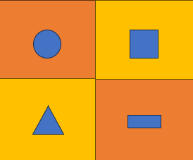

📰 Pulse™: seu pulso de notícias na hora que quiser.
Publicado em 09/06/2026Já pensou em receber notícias dos temas que quiser? Conheça o Pulse™.


Copie o link do feed da Retropixel™ e adicione-o ao AeroFeed.
Já pensou em receber notícias dos temas que quiser? Conheça o Pulse™.
Rede social retrô sem algoritmos ou rastreamento.
Vibra™Ferramentas de produtividade no estilo Frutiger Aero.
Mensageiro simples e nostálgico da Retropixel™.
Um DOS inspirado nos clássicos dos anos 80/90.
Navegador atualizado da Retropixel™.
Chat privado estilo anos 2000.
Em construção com carinho pixel por pixel 👾
Central oficial de novidades da Retropixel™.